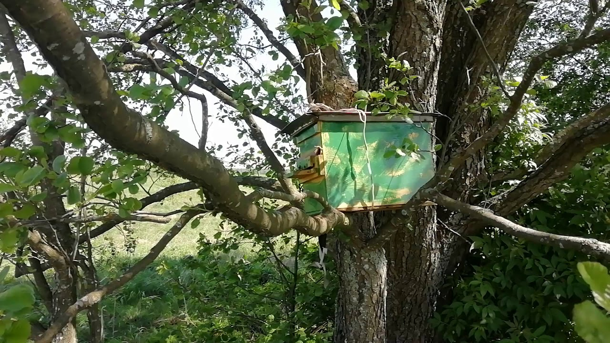
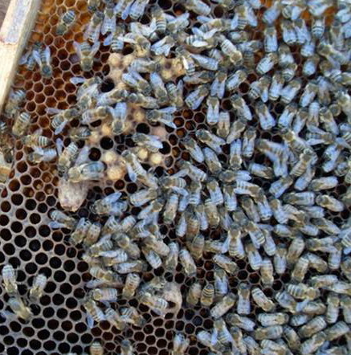

Бджільництво
Продукти
Лікування
Секрети бджільництва.
Охота на бджіл.
 Зі всіх видів полювання, мабуть, саме охота на бджіл найгуманніша. Займаючись лісовим ловом бродячих роїв, охотник-роєлов не прирікає свою жертву на смерть. Він надає диким бджолам досить комфортне, хоча і в чомусь рабське існування. Надійний дах у вигляді пастки з рамками, а потім і повноцінний вулик на пасіці, рятують бджіл від можливої загибелі в лісі, але тим самим заставляють їх працювати на бджоляра. Як ловити бродячі рої, які пастки використовувати, де і коли їх ставити - про все це я розповім вам сьогодні, дорогі друзі.
ДЕТАЛЬНІШЕ...Невдала тиха заміна матки.
 Цікавий випадок стався у мене на пасіці навесні минулого року. Переглядаючи одну з бджолиних сімей після зимівлі, я не виявив в ній матки. Замість міченої матки на одній з рамок я побачив розкритий з торця маточник з жменькою розплоду трутня навколо нього. Річ у тому, що в зиму сім'я йшла з молодою маткою породи бакфаст і великою кількістю розплоду, але сьогодні, вже у кінці березня, у вулику не було ні матки, ні нормального розплоду.
ДЕТАЛЬНІШЕ...Тиха заміна матки.
 Ранньою навесні минулого року я із здивуванням виявив під льотками чотирьох вуликів на своїй пасіці трупи мічених
маток, що відпрацювали один-два сезону. Спочатку засмутився, але знайомий досвідчений бджоляр заспокоїв мене і
розповів, що в цих сім'ях сталася тиха зміна матки і це велике благо для бджоляру. Завершуючи цикл публікацій про
заміну матки, сьогодні я розповім про те, як відбувається тиха зміна матки і які переваги має сім'я з такою маткою.
Ранньою навесні минулого року я із здивуванням виявив під льотками чотирьох вуликів на своїй пасіці трупи мічених
маток, що відпрацювали один-два сезону. Спочатку засмутився, але знайомий досвідчений бджоляр заспокоїв мене і
розповів, що в цих сім'ях сталася тиха зміна матки і це велике благо для бджоляру. Завершуючи цикл публікацій про
заміну матки, сьогодні я розповім про те, як відбувається тиха зміна матки і які переваги має сім'я з такою маткою.
Як підсадити матку в рій.
 На зорі становлення своєї пасіки, як і багато початкуючих бджолярів, я розширював поголів'я бджіл невитіюватим
дідівським способом. Бджоли роїлися, а я ловив рої і заселяв їх в нові вулика в надії, що роевая сім'я більше не
роїтиметься як мінімум до наступного сезону. Але уся, як нині говорять, "пичалька" була в тому, що роїлися вони
знову і знову вже в липні, а іноді навіть і в серпні. Причому з кожним роком роевые симптоми посилювалися, бджіл
ставало багато, а меду не додавалося. Ось саме тоді я зрозумів, що доки не зміню породу бджіл на пасіці толку від
такого бджільництва не буде. Відтоді кожного разу, коли мені вдається упіймати рій, я тут же міняю в нім матку
на породисту.
На зорі становлення своєї пасіки, як і багато початкуючих бджолярів, я розширював поголів'я бджіл невитіюватим
дідівським способом. Бджоли роїлися, а я ловив рої і заселяв їх в нові вулика в надії, що роевая сім'я більше не
роїтиметься як мінімум до наступного сезону. Але уся, як нині говорять, "пичалька" була в тому, що роїлися вони
знову і знову вже в липні, а іноді навіть і в серпні. Причому з кожним роком роевые симптоми посилювалися, бджіл
ставало багато, а меду не додавалося. Ось саме тоді я зрозумів, що доки не зміню породу бджіл на пасіці толку від
такого бджільництва не буде. Відтоді кожного разу, коли мені вдається упіймати рій, я тут же міняю в нім матку
на породисту.
Як виправити сім'ю-трутовку і підсадити до неї матку.
Іноді буває так, що бджолина сім'я втрачає матку, а можливість вивести нову матку у такої сім'ї відсутня.
Частенько таке трапляється після невдалої зимівлі. Якщо ж матка в сім'ї з якихось причин загинула, то через
деякий час бджоли перетворюються на трутовок і починають замість матки самі сіяти незапліднені яйця.
Виправлення сім'ї-трутовки підрозуміває під собою очищення сім'ї від бджіл-трутовок або від дефектної матки і підсадку
в неї плідної матки. Проте це потребує від вас особливої обережності, оскільки бджоли, що довгий час знаходилися без
матки, стають дуже злими і готові убити будь-яку матку, яку ви до них підсадите. Проте є деякі методи, які
дозволяють це зробити з високою мірою надійності. Про один з них я і розповім вам сьогодні.